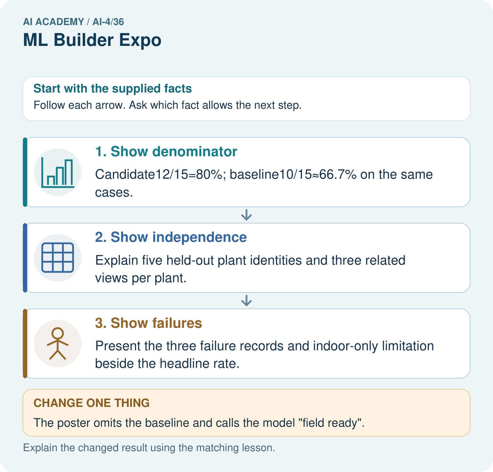

AI Academy · Level 4 · Grade 9 · Week 36 · Teacher guide
ML Builder Expo
Learn to understand, design, build, test and explain AI systems responsibly.
Project: Responsible Plant Classifier
Teacher guide · 1 of 7
ML Builder Expo
Teach the learning cycle
Primary target: Defend the project using traceable evidence
| Session | Sequence and minutes | Resources |
|---|---|---|
| Session 1 · Understand · 45 min | 0–7: recall and prerequisite; 7–15: inspect the concrete case and predict; 15–30: teacher models the worked trace; 30–40: learners explain a step using the text and visual; 40–45: check the core idea. | Sections 1–6; record the brief recall in the workbook. |
| Session 2 · Practise · 45 min | 0–5: retrieve the procedure; 5–15: W2 completion practice; 15–23: explain and check with a partner; 23–30: each learner answers the misconception check; 30–40: targeted reteaching or a harder variation; 40–45: prepare the investigation. | Sections 7–10; use the matching workbook W2 and misconception check. |
| Session 3 · Investigate and transfer · 45 min | 0–5: retrieve the decision rule; 5–20: investigate or trace; 20–30: start the independent case; 30–38: connect the project; 38–43: act on feedback; 43–45: plan the return check. | Sections 9 and 11–14. Give extra time to finish the full task set; use Section 15 when the week includes a coding lab. |
This is a starting allocation of 135 minutes, not a validated duration. Preserve all named topics. Schedule extra time for connected examples, the full investigation, independent cases and project building. Repeated copies of a case share one recorded attempt; they are not new evidence.
Retrieval answer guidance
Capstone Train, Analyze, Improve
Without opening the old lesson, explain one key idea from Capstone Train, Analyze, Improve. Give an example and a mistake that the idea helps you avoid.
Look for: Run a frozen final evaluation with complete accounting
Reference example, not the only acceptable wording: Teacher explanation: Candidate accuracy 9/12=75 percent, precision 2/3, recall 2/4; baseline 8/12 about 66.7 percent, with all four blocked cases missed.
Model Cards and Human Review
Without opening the old lesson, explain one key idea from Model Cards and Human Review. Give an example and a mistake that the idea helps you avoid.
Look for: Write a model card whose claims match evidence
Reference example, not the only acceptable wording: Teacher explanation: Intended: compare toy classifiers on the documented fictional task. Not supported: real parcel handling, student assessment or decisions outside the evaluated setup.
Improve Generalization
Without opening the old lesson, explain one key idea from Improve Generalization. Give an example and a mistake that the idea helps you avoid.
Look for: Compare training and validation evidence for model capacity
Reference example, not the only acceptable wording: Teacher explanation: Choose the line with validation MAE 3. The curve training MAE 0 does not compensate for validation MAE 8.
Use the student module and workbook section with this exact week title. The worked case, independent question and answers below form one aligned lesson sequence.
What the learner must demonstrate
Final counts are TP=12,FN=3,FP=5,TN=20. Compute accuracy, precision and recall, then state one limitation and a review trigger for the model defense.
Concept to explain
A builder defends the complete evidence chain: problem, data, code, model, metrics, errors, fairness, limitations, and human oversight.
| Term | Meaning |
|---|---|
| technical defense | evidence-based explanation under questions |
| traceability | link claim to data, code, result, and decision |
| transfer test | fresh case not rehearsed |
| release decision | approve, limit, revise, or stop |
Prepare the class
Use the supplied scenario, student illustrations and blank paper. For numeric work, offer counters or a calculator after learners show the setup. Fictional records are supplied; personal data and paid accounts are unnecessary.
Allow 80 minutes: recall 8; explanation 12; worked demonstration 15; guided practice 20; independent assessment 15; project and reflection 10. Extend the lab into a second session when needed.
Preparation for the connected explanation
Teach two 45-minute sessions. This week focuses on machine learning project defense. Model the worked example first, collect the new W 4 case independently before feedback, and use the fresh retry to check transfer. Award credit for traceable reasoning and bounded claims, including justified uncertainty.
Readiness answer
A result describes observed evidence; a claim must not extend beyond what that evidence supports.
Printed student lesson and workbook
Paper, pencils and a calculator for fractions
The fictional examples and a blank evidence table
Saved classroom project records for critique; no personal student dataset required
End goal for the pictorial case
By the end, I can explain ml builder expo using a traced example and a stated limitation.
This added worked case illustrates the week’s main idea. Retain all original and connected topics; schedule its practice within the teaching cycle.
Teacher guide · 2 of 7
Explain the mechanism
Explain the mechanism
Trace the information, fitted behavior, and evaluation proof separately.
QUESTION Recompute a fresh metric and answer an unseen failure case during the defense.
MODEL IDEA A builder defends the complete evidence chain: problem, data, code, model, metrics, errors, fairness, limitations, and human oversight.
PROOF NEEDED Use an unseen case, visible calculation, error analysis, and a stated limitation.
UNDER THE HOOD Trace one leaf from source and split through preprocessing, model, prediction, and review. Recompute precision or recall from a fresh confusion matrix without notes.
Draw a fresh data → model → prediction → evaluation trace:
Predict first. Then check each step. A correct answer without visible evidence cannot be audited.
STEP 1 Trace one leaf from source and split through preprocessing, model, prediction, and review.
STEP 2 Recompute precision or recall from a fresh confusion matrix without notes.
STEP 3 Run an unseen low-light or missing-feature case and follow the documented fallback.
STEP 4 State intended use, do-not-use, subgroup limitation, provenance, and who remains accountable.
CHECK Verify the denominator, unit, split, class definition, and data version before interpreting a score.
Recalculate, retrace, or restate the evidence independently:
Concrete teaching case
Final classifier gets16/20 correct; two of four errors are false negatives.
Report supported metrics and what is missing.
Exact explanation to model
Accuracy80%. Recall cannot be computed from FN alone; actual positives or TP are needed. Show full matrix, limits and review path.
Explain the added worked example
The final defense tells a coherent story: question, data, method, comparison, errors and limits. A strong project may conclude that the baseline is preferable or evidence is insufficient. The aim is sound reasoning and a reproducible investigation, not an impressive headline or polished unsupported claim.
Use fictional classroom data throughout this investigation. Keep the task, units, reference labels and data split visible as you reason. Earlier weeks supplied the model-building process; this week examines machine learning project defense.
Example opening: We compared a simple classifier with an always-clear training baseline on fictional parcels. We froze the procedure before a 12-case test. Candidate accuracy was 9/12 versus baseline 8/12; candidate FP 1 FN 2. These small synthetic results support a classroom comparison, not real parcel decisions. We would next investigate dim-condition coverage using new development data.
Before continuing, underline the decision rule and circle the evidence that supports the conclusion. Explain the example to a partner without replacing the counts or conditions with a stronger claim. Keep the distinction between an observed result and a proposed next step.
Key terms
| Term | Meaning |
|---|---|
| Defense | An explanation of decisions supported by inspectable evidence |
| Traceability | Ability to follow a claim back to its source |
| Limitation | A boundary on interpretation or supported use |
| Reflection | An account of learning and justified next steps |
Model the reasoning aloud
Use the complete worked example below before asking learners to complete W2. Reveal a small part, invite a prediction, then explain the deciding step. These teacher notes contain solutions; do not reveal the independent case answer during modelling.
Machine learning project defense at a glance
| Thinking move | Teacher prompt |
|---|---|
| Plan | What is given? What is the question? Which procedure fits these facts? |
| Do | Point to each input and intermediate step in the worked trace. Name the rule that allows the next step. |
| Check | Does the output answer the question? Which assumption or limitation prevents a larger claim? |
Use the diagram and verbal explanation together. Ask learners to match a sentence to a specific visual step; do not assign learners fixed visual or auditory learning styles.
A pictorial worked case: ML Builder Expo
Present a plant-classifier expo claim that another team could check.
The facts we will use
Toy expo evidence: 15 held-out photos from 5 plants; candidate12 correct, baseline10 correct. Three candidate failures are recorded; no outdoor trial exists.
All inputs and outcomes in this worked example are invented classroom data; no real model run is claimed.

Read the picture one step at a time
Why this result follows
Read the picture in order. Present the three failure records and indoor-only limitation beside the headline rate. The arrows show which recorded input or intermediate result each decision uses. Explain the deciding step aloud before checking the changed case; pointing to the final answer alone does not show how it follows.
What this example does not establish
Clear presentation helps review but does not increase the strength of a tiny or unrepresentative evaluation.
Change one thing in the pictured case
Change: The poster omits the baseline and calls the model “field ready”.
Prediction: The headline exceeds the supplied evidence.
Reason: No outdoor evaluation is supplied, and the comparative benefit is obscured without the same-case baseline.
Ask while showing the picture
Cover the result. Ask learners to name the inputs and predict the next step. Uncover one step, connect the icon to the actual procedure, and explain its evidence. Then change the supplied condition and compare. The picture is a representation; it does not document execution of a real AI model.
Teacher guide · 3 of 7
Demonstrate and guide practice
Demonstrate and guide practice
Board sequence
Write the given facts: Final classifier gets16/20 correct; two of four errors are false negatives.
Write the question to explain: Report supported metrics and what is missing.
Reveal after predictions: Accuracy80%. Recall cannot be computed from FN alone; actual positives or TP are needed. Show full matrix, limits and review path.
Keep for an independent attempt: Your expo model succeeds on three demonstration plants. What evidence should accompany the demo and what limitation should you state?
Classroom dialogue
Ask: Which facts are given, and which would we have to assume? Learners mark relevant details before discussing answers.
Say: Predict first. Show the rule, information path or calculation that would produce the result. A correct guess is not yet an explanation.
Reveal reasoning one step at a time. Explain why a tempting alternative fails. Write units and denominators for arithmetic, trace conditions for decisions, and identify supporting sources for claims.
In pairs, one learner solves while the other checks evidence; exchange roles. Remove the worked answer before independent assessment.
Model these guided questions
Guided response: Prediction ledger with references and outputs, split membership, frozen model/run record and metric definition; count correct rows over all scored rows under the saved policy. Exit response: A valid response links a documented limitation to new development evidence, records any revised version, and reserves fresh independent final-test evidence for a later frozen evaluation.
Case-specific teaching sequence
| Stage | Teacher action |
|---|---|
| Session 1 start to 7 minutes | Use the prerequisite question: What is the difference between a result and a claim? Check the explanation before proceeding. |
| 7 to 18 minutes | Review the four rubric dimensions. Use W1–W3 to prepare a bounded opening and an auditable evidence summary. |
| 18 to 32 minutes | Teams prepare a five-minute defense and one-page summary. Check every claim against the saved project files and rehearse one prediction trace. |
| 32 to 45 minutes | Run peer rehearsals in pairs. Each reviewer records a question about data roles, a failure and the claim limits. |
| Session 2 start to 8 minutes | Complete W4 independently as a short critique of unsupported claims. Use the result to target final feedback. |
| 8 to 20 minutes | Begin defenses in parallel small groups: five minutes presenting plus two minutes of questions per team. Teacher samples evidence and collects all records. |
| 20 to 35 minutes | Continue defenses and record scores separately for data/splits, reproducibility, evaluation and communication. Use written evidence as well as the live explanation. |
| 35 to 45 minutes | Complete W5 as an individual reflection. Resolve or record peer feedback, identify a justified next step and use the fresh retry for learners who confuse model improvement with project success. |
Reduce help deliberately
Completion task: Name the files needed to audit one reported accuracy figure.
Teacher check: Teacher explanation: Prediction ledger with references and outputs, split membership, frozen model/run record and metric definition; count correct rows over all scored rows under the saved policy.
Start by identifying the given inputs together. Leave the intermediate steps blank. If needed, model one step, then withdraw that help on the next step. Move to a full trace only when the partial trace is understood. For partners, alternate explainer and checker; collect a response from every learner before discussion.
Individual reasoning check
Use the worked case for Machine learning project defense. Proposed explanation: “A final answer is enough”. Decide whether this explanation is supported. Point to the step or supplied fact that decides; explain your repair if needed.
Expected correction: Ask for the relevant counts, units, procedure or saved record. For this week: A valid response names the fictional task, reports an auditable baseline/candidate comparison with denominator, and restricts the claim to the evaluated setup.
Collect explanations, not only yes/no votes. If a misunderstanding is common, re-model the relevant step for the class. If it affects a few learners, give a short targeted group explanation while others solve a more demanding variation.
Pictorial practice question
Which three supporting items should be visible at the expo? Point to the relevant step in the picture, then write the changed result and the rule or evidence that supports it.
Reasoned teacher answer
Show split/provenance, candidate-versus-baseline counts, and actual error records with the indoor-only scope. Changed-case check: The headline exceeds the supplied evidence. No outdoor evaluation is supplied, and the comparative benefit is obscured without the same-case baseline.
Changed-case reasoning: The headline exceeds the supplied evidence. No outdoor evaluation is supplied, and the comparative benefit is obscured without the same-case baseline.
Collect each learner’s explanation before discussion. Use the first missing connection between input, deciding step and result to choose support. This question is worked-case practice, not fresh mastery evidence.
Teacher guide · 4 of 7
Run the weekly evidence lab
Run the weekly evidence lab
Keep the test conditions fixed, record every result, and change only one planned factor.
1. Write the hypothesis and expected evidence before running.
2. Expo Defense: present the evidence bundle, accept a fresh calculation and transfer case, explain one failure, and defend a release decision.
3. Run one normal, one boundary, one missing, and one shifted case.
4. Calculate the metric from raw counts or row-level errors.
5. Interpret what changed, what did not, and what remains unsafe or unknown.
Make the lab runnable
Use the concrete case as the shared normal case and the independent question as a second case. Each pair creates a boundary or missing-information case and predicts its result before testing. Keep the expected result separate from an observed mistake.
| Record | What to capture |
|---|---|
| Input or evidence | Exact data, instruction or claim |
| Expected result | Answer or safe fallback declared before the run |
| Observed result | Actual result, including errors |
| Explanation | Rule, calculation or evidence explaining the outcome |
| Next test | One justified change and a new prediction |
Diagnose and reteach
MISCONCEPTION TO REPAIR A smooth prepared demo proves the model is reliable and ready for use.
For guessing, return to given facts and request a trace. For vocabulary without application, use one example and one non-example. For arithmetic errors, check the setup before the calculation. Finish with a different uncoached case before recording mastery.
Address these additional misconceptions
A final answer is enough: Ask for the relevant counts, units, procedure or saved record. For this week: A valid response names the fictional task, reports an auditable baseline/candidate comparison with denominator, and restricts the claim to the evaluated setup.
A stronger claim makes a stronger project: A valid response links a documented limitation to new development evidence, records any revised version, and reserves fresh independent final-test evidence for a later frozen evaluation.
The new case can be copied from the example: The independent task changes the evidence. Require a fresh explanation: Request the baseline on the same cases, split/development history and full error counts/limits. A polished presentation cannot establish validity or supported use without auditable evidence.
Match the support to the first error
| What the response shows | Next teaching action |
|---|---|
| Missing or misread facts | Read the case aloud, mark supplied versus unknown facts, and let the learner restate it. |
| Wrong procedure | Return to the deciding step in the worked case. Contrast it with the proposed incorrect explanation. |
| Arithmetic or implementation error | Trace intermediate values or lines; preserve the first mismatch and retry that step. |
| Correct result without a reason | Ask for a trace and a changed case before marking independent understanding. |
| An unsupported wider claim | Ask which supplied evidence supports the claim and which further observation would be needed. |
Offer an oral explanation, drawing, enlarged visual or fewer examples when that removes a reading/writing barrier. Keep the same reasoning goal. Stretch secure learners by changing a boundary or assumption and asking them to defend the effect, not simply by assigning more of the same questions.
Teacher guide · 5 of 7
Assess and explain the answers
Assess and explain the answers
Worked case answer
Accuracy80%. Recall cannot be computed from FN alone; actual positives or TP are needed. Show full matrix, limits and review path.
Independent question
Your expo model succeeds on three demonstration plants. What evidence should accompany the demo and what limitation should you state?
Expected independent answer
Present dataset and split records, baseline, held-out results, errors, subgroup checks, revisions and model-card limits. Three demonstrations do not establish performance across all plants.
What counts as evidence
| Criterion | 0 points | 1 point | 2 points |
|---|---|---|---|
| Result | Incorrect or absent | Partly correct | Correct with necessary conditions |
| Reasoning | No supporting trace | Some steps | Clear mechanism, calculation or source support |
| Limit | Overclaims certainty | Vague limitation | Relevant uncertainty or missing fact |
| Transfer | Copies without adapting | Adapts with prompts | Solves a changed case independently |
Use 6/8 as a classroom checkpoint, with 2 required for both Result and Reasoning. This is a proposed teaching rule, not a validated certification threshold. Do not count a coached answer as independent mastery; correct unsafe or unsupported claims regardless of total.
Feedback
Ask the learner to find the evidence that challenges this claim: “A smooth demonstration replaces an independent evaluation and model card.” Keep the first attempt and an uncoached retry separate.
Original transfer answer
Total=40; accuracy=32/40=80%; precision=12/17≈70.6%; recall=12/15=80%. These describe the tested set only. Show conditions and subgroup counts, and route missing or out-of-scope inputs to review under a predefined policy.
Explanations for the additional workbook examples
W1 Write an opening
Draft a three-sentence opening with purpose, a result and a limit.
Teacher explanation: A valid response names the fictional task, reports an auditable baseline/candidate comparison with denominator, and restricts the claim to the evaluated setup.
W2 Trace evidence
Name the files needed to audit one reported accuracy figure.
Teacher explanation: Prediction ledger with references and outputs, split membership, frozen model/run record and metric definition; count correct rows over all scored rows under the saved policy.
W3 Answer critique
A peer asks whether your model works for every school. Give a supported response.
Teacher explanation: No universal conclusion is supported. State the actual synthetic dataset and conditions, missing coverage and what additional appropriate evidence would be needed.
W4 Apply independently
Review a defense claiming 95 percent success on 20 cases but omitting the baseline, split history and errors. Give three revision requests and explain why polish is insufficient.
Teacher explanation: Request the baseline on the same cases, split/development history and full error counts/limits. A polished presentation cannot establish validity or supported use without auditable evidence.
W5 Plan the next step
Write one next investigation tied to an observed limitation, and identify what must stay held out.
Teacher explanation: A valid response links a documented limitation to new development evidence, records any revised version, and reserves fresh independent final-test evidence for a later frozen evaluation.
Assess independent transfer
Selected case: Review a defense claiming 95 percent success on 20 cases but omitting the baseline, split history and errors. Give three revision requests and explain why polish is insufficient.
Selected case answer
Teacher explanation: Request the baseline on the same cases, split/development history and full error counts/limits. A polished presentation cannot establish validity or supported use without auditable evidence.
| Dimension | Evidence required |
|---|---|
| Explanation | Names the applicable idea or procedure and ties it to the supplied facts. |
| Trace and result | Preserves the given inputs and shows the relevant intermediate steps; distinguishes a prediction from an observed execution. |
| Limits | States the assumptions, missing evidence or conditions under which the result would change. |
Record each dimension as not yet, with support, or independent. Accept a valid alternative procedure with a defensible trace. Do not penalise an honestly recorded model failure if the learner correctly explains its evidence and limits.
Feedback that the learner uses
Name the earliest unsupported step and give one action to repair it. Have the learner make that repair now and explain why. Then assess the relevant skill on a fresh, fully specified case. Confirm it was not previously practised with feedback; solve and check the new case before assigning it. A follow-up design prompt is a starting brief, not automatically an equivalent test.
Teacher guide · 6 of 7
Connect and extend learning
Connect and extend learning
Responsible Plant Classifier
Deliver the final Responsible Plant Classifier product card, live evidence trace, model card, and human-oversight commitment.
Keep the decision, input, result, explanation and remaining limitation in the project evidence record. Retrieve this record next week rather than restarting the project.
Support and stretch
Use a tiny labelled dataset, explicit units and a named positive class. Stretch: require a baseline, held-out evaluation and subgroup or shifted-condition analysis with denominators.
Exit reflection
Ask for one decision the learner can now justify and one situation requiring more evidence or human review. Confidence ratings are separate from correct independent performance.
Bridge to the next week
Review the full project evidence and choose concepts needing another independent attempt before the next level. One expo is not proof of mastery of all AI.
Support and fresh reassessment
Provide a blank evidence table and allow a verbal explanation before writing. Highlight the given conditions without supplying the W 4 conclusion. Use defense and traceability in full sentences. Extension: alter one condition in the worked example and explain which conclusion changes and which remains supported.
For independent W 4, require: Request the baseline on the same cases, split/development history and full error counts/limits. A polished presentation cannot establish validity or supported use without auditable evidence. Fresh retry: a learner says our baseline won, so the project failed. Ask for a defense explaining the valid comparison, retained baseline, limits and an evidence-based next investigation; do not reward invented improvement. Mark each criterion as independent, supported or not yet demonstrated. Reassess the reasoning after feedback; do not replace the first attempt silently.
Grade 8 is complete. Use the project defense and independent work to assess readiness for the next level. Revisit split integrity, model fitting and evaluation before advancing if those foundations are not yet secure.
Plan the delayed return
Suggested return points in this level: plan a review after the level ends. Use actual classroom dates, adjusting for holidays and gaps. One, three and six teaching weeks are scheduling choices, not a claimed optimal spacing.
At a delayed check, ask for the idea from memory and a changed application. Compare with the earlier independent response and record support used. For a new level, revisit the previous capstone before checking the new prerequisites.
| Record | Teacher evidence |
|---|---|
| Learner code and date | |
| Concept and case used; prior exposure | |
| Explanation / trace / limits | |
| Support and first repair | |
| Changed case and delayed outcome | |
| Next teaching action |
Use the evidence to choose reteaching or the next step. A completed page, confidence rating or attractive project does not by itself demonstrate understanding.
Project evidence from this case
For your Responsible Plant Classifier, save the input, procedure, observed result and limitation of this check. Label this worked example as practice; use a different, previously unreviewed case when checking independent understanding.
Teacher guide · 7 of 7
Prepare, teach and assess
Teaching target: Defend the project using traceable evidence
Prepare the labelled worked-case picture, the matching workbook, fictional input cards and a place for individual responses. Check a local Python 3 environment before class; have a paper-trace version ready.
| Session | Plan | Resources |
|---|---|---|
| Session 1 · Understand · 45 min | 0–7: recall and prerequisite; 7–15: inspect the concrete case and predict; 15–30: teacher models the worked trace; 30–40: learners explain a step using the text and visual; 40–45: check the core idea. | Sections 1–6; record the brief recall in the workbook. |
| Session 2 · Practise · 45 min | 0–5: retrieve the procedure; 5–15: W2 completion practice; 15–23: explain and check with a partner; 23–30: each learner answers the misconception check; 30–40: targeted reteaching or a harder variation; 40–45: prepare the investigation. | Sections 7–10; use the matching workbook W2 and misconception check. |
| Session 3 · Investigate and transfer · 45 min | 0–5: retrieve the decision rule; 5–20: investigate or trace; 20–30: start the independent case; 30–38: connect the project; 38–43: act on feedback; 43–45: plan the return check. | Sections 9 and 11–14. Give extra time to finish the full task set; use Section 15 when the week includes a coding lab. |
Before class, solve the supported practice: Name the files needed to audit one reported accuracy figure.
Reasoned practice answer: Teacher explanation: Prediction ledger with references and outputs, split membership, frozen model/run record and metric definition; count correct rows over all scored rows under the saved policy.
Check every learner before discussion: Use the worked case for Machine learning project defense. Proposed explanation: “A final answer is enough”. Decide whether this explanation is supported. Point to the step or supplied fact that decides; explain your repair if needed.
Misconception repair: Ask for the relevant counts, units, procedure or saved record. For this week: A valid response names the fictional task, reports an auditable baseline/candidate comparison with denominator, and restricts the claim to the evaluated setup.
Support: read the exact case aloud, enlarge the labelled picture, supply input cards and model only the first deciding step. Accept a spoken explanation or drawing; retain the reasoning goal.
Extension: The poster omits the baseline and calls the model “field ready”. Require a prediction and a reason before comparing. Expected result: The headline exceeds the supplied evidence. Reason: No outdoor evaluation is supplied, and the comparative benefit is obscured without the same-case baseline.
Independent assessment: withhold the reserved answer until the learner has attempted the new case. Record support separately from correctness.
| Criterion | Not yet | With support | Independent |
|---|---|---|---|
| Explanation | Names an answer without a deciding fact | Uses a hint to link fact and decision | Explains the deciding fact in own words |
| Trace or test | Cannot connect input and result | Completes steps with prompts | Traces or tests a changed case accurately |
| Limits and revision | Claims more than evidence supports | Names a limit after a prompt | States a defensible limit and useful next test |
Project checkpoint: Present and defend. Demonstrate the system, explain one failure and justify the next improvement with evidence.
Use the weekly teacher answer for topic-specific reasoning. A saved progress tick is an activity record; judge mastery from the learner’s explanation and evidence.